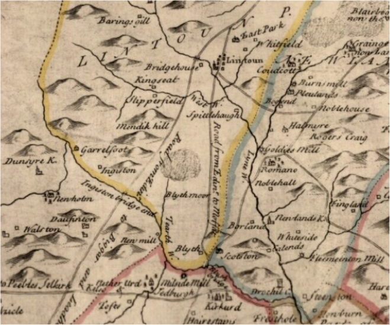

|
Veitch
Index > Lineages: Veitch
of Dawick > William
Veitch of Dawick > James Veitch > William Veitch >
William Veitch of Blyth
Veitch Family Lineages
Veitch of Blyth
West Linton Parish, Peeblesshire

Linton Parish (aka West Linton) Peeblesshire, showing
Veitch lands at Blyth and Garrelfoot
4(iii). William Veitch of Blyth,
who had seven acres of the Kirklands of Peebles, in which his
grandson John, then portioner of Ladyurd, was in 1677 served
as his heir. He was portioner of Blyth. note: "portioner"
is an owner of land, previously divided among co-heirs (or portions)
Married 1) Margaret Lindsey. She died about 1605
1605 Edinburgh Testaments. Lindsay, Margaret. sometime
spouse to William Waiche, brother-germain [same father and mother)
to John Waiche, Laird of Dawik, sher. of Peebles 29 June
Married 2) Jane Hamilton
Children were (wife Hamilton):
5(i). Thomas Veitch born after 1605. Was portioner
of Lochurd and Blyth. Died about 1659
1636, June 7. James Law, one of the keepers of His Majesty's
signet, and heritable proprietor of the Temple-land of Kirkurd,
complains that whereas he has been in peaceable possession 'until
latelie, when Thomas Murray, his tenant, having entered on the
building of ane hous in April last, Thomas Veitche in Lockhurd
came to the compleaners saids lands, threatened the said tenant
and Robert Broune, workman, who was bigging the hous, forced
him to leive his worke, thairafter violentlie pulled doune the
thacke and a great part of the timber and walls of the said hous
;' and came afterwards and demolished the house utterly, so that
' the poore tenente will be forced to ly in the fields.' The
persons concerned being present, the Lords remit the matter '
anent the right of ground quhairupon the said house was built,
to be pursewed before the judge ordinarie, and in the meantyme
desired the parties to nominal eache some sufficient man ' to
decide as to where the house may be built. Accordingly, the parties
nominated Robert Tweedie in Bordland, and James Geddes of Rachan,
to whom the Lords gave the requisite powers. P. C. R.
Married Katherine Taylor
1661 Veitch William (Thomas), portioner of Blyth, his widow,
Catherine Taylor 27 Sept. Greyfriars Burying Ground, Edinburgh
Children were:
6(i). John Veitch who was portioner of Ladyurd and
in 1659 was heir of his father Thomas Veitch and in 1677 heir
of grandfather William Veitch
Married Margaret Geddes
6(ii). Mark Veitch
|